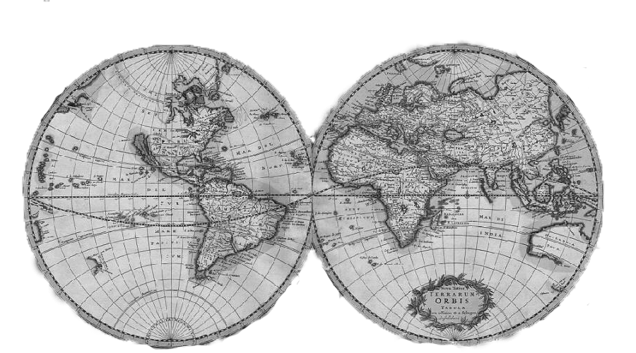

<!-- <footer>
		<div id="footercontent">
			<div id="bottomlogo">
				
			</div>
			<div id="link">
				<p style="color:#b9b9b9;margin-bottom:10px;">友情链接</p>
				<div style="width:80px;float:left;">
				<a href="#">链接1</a><br>
				<a href="#">链接2</a><br>
				</div>
				<div style="width:150px;float:left;">
				<a href="#">链接4</a><br>
				<a href="#">链接5</a><br>
				</div>

			</div>
		</div>
</footer> -->
	<footer>
		 <div id="footercontent1">
			<div id="bottomlogo">
				
			</div>
			
			<div id="link">
				<div id="nametitle" style="width:800px;float:left;">
					<div class="whitefont">世界政治研究中心</div>
					<div class="whitefont">华东师范大学</div>
					<div style="color:#FFFF00; font-size:18px;height: 25px;">Center for World Politics at ECNU</div>
				</div>
				<div id="address" style="width:500px;float:left;margin-top: 10px;">
					<div class="whitefont">联系我们：</div>
					<div class="whitefont">上海市闵行区东川路500号</div>
					<div class="whitefont">华东师范大学闵行校区法商南楼505室</div>
					<div class="whitefont">ecnuworldpolitics@foxmail.com</div>
				</div>

			</div>
			
		</div> 
	</footer>